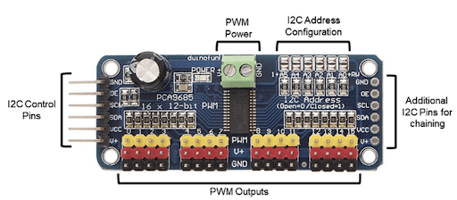
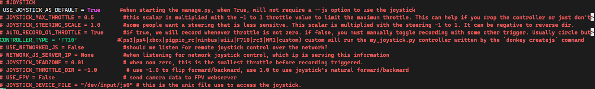
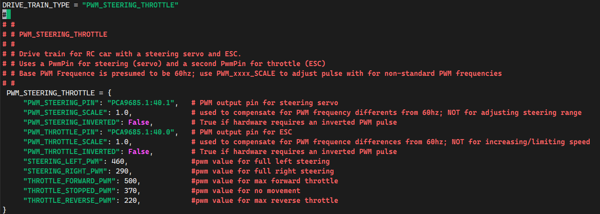

Setting Up and Calibrating Your Donkey Car
Step 1: Connecting to Your Car¶
Objective: Our first task is to create a digital conduit through which your computer will communicate with your miniature autonomous vehicle, facilitating commands and data exchange.
Procedure¶
-
Secure Connection Establishment: Utilize SSH (Secure Shell) to establish a secure command line interface with your vehicle's computing unit, the Raspberry Pi. Detailed instructions for this process can be found under the "Networking" section.
-
Creating the Project Directory:
-
Execute the command:
donkey createcar --path ~/mycarCreate Donkey Car Project Directorydonkey createcar --path ~/mycar -
This action constructs a dedicated project directory for your vehicle, organizing essential files and configurations necessary for its operation.
-
Directory Structure Overview:¶
Upon completion, the project directory will comprise several critical components:
-
mycar/: The root directory.-
data/: Contains captured imagery and metadata from driving sessions, acting as the vehicle's experiential memory. -
models/: Stores machine learning models that enable autonomous navigation, essentially forming the vehicle's "cognitive" abilities. -
logs/: A repository for operational logs, useful for troubleshooting and performance analysis. -
config.py&myconfig.py: Configuration files for project defaults and personalized settings, respectively. While config.py remains standard, myconfig.py is where specific adjustments and preferences are defined. -
calibrate.py,manage.py,train.py: Specialized scripts for calibration, management, and training processes, though they are not directly interacted with at this stage.
-
Customization Note: While mycar is the suggested name for simplicity, you may choose any directory name that suits your project's identity.
Power Requirements: Ensure that the vehicle's Raspberry Pi is adequately powered via a portable battery and that the car itself is powered by an appropriate RC battery. Verify that any switches on the electronic speed controller (ESC) or servo are in the 'on' position to enable operation.
Step 2: Preparing for Calibration¶
Calibration is a fancy term for making sure your car understands how to move correctly when you tell it to. Before we start, place your car on a box or a similar object so the wheels are in the air. This way, it won't drive away during calibration.
About Your Car's Controls:

Your car uses something called a PCA 9685 Servo Driver to control its wheels. Imagine it as the car's steering wheel and gas pedal. Normally, the "gas pedal" is connected to output 0, and the "steering wheel" to output 1. If yours is different, you'll need to adjust the instructions accordingly.
Step 3: Connecting A Joystick Controller to the Donkey Car¶
Why use a joystick? If you've ever played video games, you know how intuitive a joystick can be for controlling movement. We can apply this same intuitive control to our Donkey Car project, allowing for more precise and responsive control compared to using a web interface.
Choosing the right controller: Not all controllers are created equal, and the steps to connect them can vary. However, most controllers that connect via a USB adapter will follow a similar setup process. We'll be using the Logitech F710 as our example, but if you have a different controller, check the Donkey Car documentation for specific instructions.

Getting Started with the Logitech F710 Controller¶
-
Prepare the Controller:
-
Ensure your Logitech F710 controller has fresh/charged batteries installed.
-
If it comes with a USB adapter (a small plug that connects to your computer or Raspberry Pi), make sure it's on hand.
-
-
Connect to the Raspberry Pi:
- Plug the USB adapter into a USB port on the Raspberry Pi. This is how the controller will communicate with the car.
-
Configure the Settings:
-
Locate the file named
myconfig.pyon your Raspberry Pi. This file contains various settings for your Donkey Car. -
Find the section labeled "Joystick" and make the following changes:
-
Uncomment (remove the # symbol from the start of) the line
USE_JOYSTICK_AS_DEFAULT = True. This tells the system to use the joystick as the primary control method. -
Change
CONTROLLER_TYPEtoF710to specify which controller you're using.
-
-
-
Pairing the Controller (If Needed):
-
Some users have reported issues when first trying to pair their F710 controller with the USB dongle. If this happens, you'll need to use Logitech's Pairing Utility to fix the connection. Here's how:
-
Attach the USB dongle to your computer (not the Raspberry Pi for now).
-
Download and open Logitech's Pairing Utility software.
-
Follow the on-screen instructions to pair the dongle with the controller.
-
Once paired successfully, reconnect the dongle to the Raspberry Pi.
-
-
Step 4: Calibrating Throttle and Steering¶

In this step, we're going to learn how to control the car's speed and direction. This might sound complex, but it's really about telling the car how fast to go and where to turn. We'll use some special commands and adjustments to do this, like tuning a musical instrument to get the right notes.
Speed Control: Making Your Car Move¶
-
Starting the Calibration Process:
-
First, we need to start the calibration for your car's speed. On your computer, type the command
donkey calibrate --pwm-pin=PCA9685.1:40.0. This command wakes up your car's speed control system and gets it ready for tuning.Calibrate ESCdonkey calibrate --pwm-pin=PCA9685.1:40.0
-
-
Finding the Neutral Speed:
- The program will give you instructions to find the neutral speed - this is the speed setting where the car doesn't move at all. It's like finding the point where your car is on but standing still. You'll try setting it to 370. If the car stays still, that's your neutral setting.
-
Testing Movement:
- Now, let's make the car move. Set the speed to 400 to move forward. To reverse, try 330. It's a bit like pressing the gas pedal: higher numbers to go forward, lower numbers to back up.
-
Fine-Tuning Speed:
- You might need to adjust these numbers a little (about plus or minus 10) to find the perfect speeds for moving forward and backward. It's like adjusting the volume on your music player to get it just right.
-
Saving Your Settings:
- Once you've found the best speeds, you'll save them in a file
named
~/mycar/myconfig.pyon your computer. Look for the sectionPWM_STEERING_THROTTLEand add your numbers for moving forward, staying still, and reversing. You'll remove the # symbol from in front of these lines to make sure the car uses these new settings.
- Once you've found the best speeds, you'll save them in a file
named
Direction Control: Steering Your Car¶
-
Starting Steering Calibration:
-
Similar to speed, we begin calibrating steering by typing
donkey calibrate --pwm-pin=PCA9685.1:40.1. This gets your car's steering system ready for tuning.Calibrate Servo/Steeringdonkey calibrate --pwm-pin=PCA9685.1:40.1
-
-
Adjusting Steering:
- Start with the wheels pointing straight ahead with a setting of 360. Then, try adjusting this number by adding or subtracting 10. Your goal is to find out how much you can turn the wheels without them making a continuous buzzing noise, which means they're trying to turn too far.
-
Saving Steering Settings:
- Just like with speed, you'll update the
~/mycar/myconfig.pyfile with your steering adjustments. You'll specify values for turning left and right. Remember to remove the # symbol from these lines to activate them.
- Just like with speed, you'll update the
Through these steps, you're not just learning how to make a car move and turn. You're learning about calibration, which is a key concept in many areas of technology and engineering. It's all about making small adjustments to get things working just right, whether it's a toy car or a real-life project in computer science or robotics.
Step 5: Final Adjustments¶
Now, it's time to see how well your car drives:
-
Place the Donkey Car on level ground and make sure it's got space to move.
-
Run
python manage.py drive –jsand openhttp://<hostname>.local:8887on a browser after the terminal prompts you to see through your car's camera.Drive the Donkey Carpython manage.py drive –js -
Start with pressing up on the joystick to move forward. If the car veers off straight, adjust the PWM values as instructed, then test again until it moves straight.
-
Ensure
USE_JOYSTICK_AS_DEFAULTis uncommented and set toTruein yourmyconfig.pyfile for easier control in the future.
And that's it! You've now calibrated your car. Remember, this is a process of trial and error, so take your time and enjoy the learning experience.